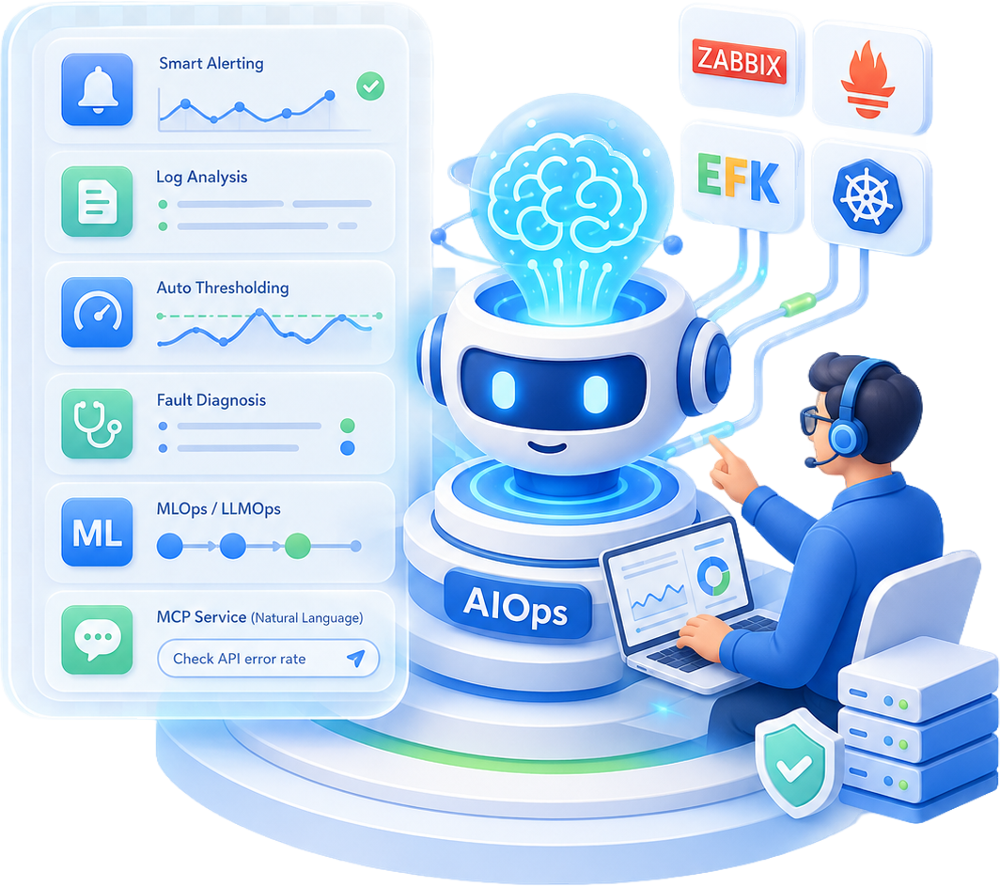

告警太多
告警噪声大，误报漏报频繁，值班人员难以及时判断优先级。
AIOps升级方向
用大模型辅助分析告警上下文，生成处理建议与报告。
从Zabbix、Prometheus、EFK到Kubernetes，系统掌握“AI+运维”落地实战，学会智能告警、日志分析、自动阈值、故障诊断、MLOps/LLMOps与MCP自然语言管理服务。

过去的运维，核心能力是会部署、会监控、会排障；但现在，企业系统越来越复杂，云原生架构、微服务、容器、数据库、中间件、日志、告警同时存在，单靠人工盯监控、翻日志、查根因，效率已经跟不上业务节奏。
AIOps不是简单把AI工具接到运维流程里，而是让运维从“被动救火”升级为“主动预测、智能分析、自动处理”。未来更有竞争力的运维，不只是会用Zabbix和Prometheus，更要能把大模型、知识库、脚本、API、K8s、日志平台整合起来，真正解决企业里的告警误判、根因定位、容量预测、自动化恢复等问题。
关联 37 条告警与 1,284 条日志，已定位异常服务。
告警噪声大，误报漏报频繁，值班人员难以及时判断优先级。
用大模型辅助分析告警上下文，生成处理建议与报告。
系统日志分散在不同服务中，人工检索耗时且难定位问题。
搭建EFK日志平台，并接入AI完成日志归因和异常分析。
固定阈值无法适应业务波动，阈值过高漏报，过低扰民。
结合Prometheus/Zabbix与AI模型实现自动阈值生成。
故障处理依赖资深工程师经验，新人难以快速接手。
沉淀知识库、SOP和智能体，让经验可复用、可调用。
巡检、备份、重启、发布、检查长期占用时间。
用Python、Jenkins、K8s、MCP实现自动化和自然语言运维。
面向运维、云原生、DevOps、DBA 与 AI 开发等技术人群，建立可落地的智能运维能力。
想从“装系统、查日志、处理告警”升级到“会智能告警、会自动化、会AI运维”的技术人。
岗位转型想深入掌握Kubernetes核心资源、调度、部署、监控，并结合AI完成智能诊断和自动化管理的人。
能力进阶想用Jenkins、ArgoCD、Python、K8s和AI提升CI/CD交付效率，推动团队自动化升级的人。
效率升级想把AI用于MySQL、Redis、MongoDB等数据库性能分析、慢查询分析、监控预测的人。
智能分析想把大模型、RAG、知识库、智能体、多模态模型部署到本地或K8s环境，做实际项目落地的人。
项目拓展想系统理解NLP、RNN、注意力机制、Transformer、大模型微调、向量数据库与智能体应用的人。
体系学习把课程卖点转化为可以真正应用到工作和项目中的能力收益。
从大模型基础、Python编程，到运维工具实践、AI集成、项目落地。
能独立搭建Zabbix、Prometheus、EFK、Kubernetes等常见运维基础设施，并理解核心原理。
能把DeepSeek等大模型接入告警、日志、监控数据分析流程，生成智能分析报告和处理建议。
能结合Prophet、机器学习、Prometheus/Zabbix数据，完成性能预测和自动阈值生成。
能通过Python脚本实现巡检、备份、服务重启、资源监控等自动化运维任务。
能理解MLOps/LLMOps全生命周期，掌握模型微调、评估、部署、注册、自动化发布等关键环节。
能尝试开发MCP自然语言运维平台，用对话方式管理K8s、MySQL、飞书、微信等服务。
课程采用“AI基础 → Python与LangChain → 运维环境搭建 → 核心监控工具 → AI智能告警/日志分析 → K8s与MLOps → MCP自然语言运维”的路径设计。你不是零散学习几个工具，而是围绕企业运维真实场景，逐步搭建自己的AIOps能力体系。
从提示词工程、智能体、RAG、知识库开始，建立大模型应用的基础认知，为后续 AI 运维场景打基础。
学习Python基础语法、LangChain组件、PromptTemplate、链式调用、与源码对话、知识图谱等内容，具备AI应用开发能力。
完成 Linux、Docker、云主机、Windows、Ollama、DeepSeek、本地可视化界面、K8s 集群和 Python 环境配置。
系统学习 Zabbix 架构、server / agent / proxy、监控项、触发器、自动发现、邮件告警、Grafana 大屏和自定义监控项。
将Zabbix与DeepSeek结合，实现智能运维告警分析；学习Prophet模型，用监控数据做趋势预测。
掌握 Prometheus 数据模型、PromQL、服务发现、node-exporter、MySQL 监控、联邦集群和 K8s 监控。
基于 Prometheus 采集数据，结合 DeepSeek 与 AI 模型，探索自动阈值生成和智能告警处理。
学习Elasticsearch、Filebeat、Logstash、Kafka、Kibana等日志平台组件，完成统一日志收集与分析。
将 EFK 与大模型结合，完成智能日志分析、数据库慢查询分析、LLMOps 模型微调、部署、评估与自动化。
从 K8s 安装、Pod、Deployment、Service、存储、StatefulSet，到 ArgoCD、AI 智能体、自动重启与自动化运维。
学习 VibeCoding 思维方式、提示词实战、Trae 应用、Cursor 开发与 Coze 智能体前后端开发。
系统理解NLP、词向量、RNN、注意力机制、Transformer、GPT模型、LangChain、Autogen多智能体。
学习大模型微调、效果与成本对比、BERT/LLaMA等微调实践、面向企业应用的高级开发思路。
从 DeepSeek 原理、R1 训练流程、开放平台 API 接入，到 LangChain 协同、应用开发与集成。
围绕 LangChain 1.0 学习环境搭建、核心组件、应用开发与全栈落地。
了解 OpenClaw 核心架构、运作原理、优势与应用场景。
开发K8s Pod诊断工具、EFK错误日志传给大模型、ML自动设置告警阈值、知识库问答系统。
学习MCP协议，用自然语言管理K8s资源、MySQL服务、SQL操作，并对接飞书、微信实现自动运维。
通过企业级项目，把Zabbix、Prometheus、EFK、K8s、DeepSeek、LLMOps贯穿到真实业务场景中。
基于Zabbix搭建统一监控平台，覆盖服务器、网络设备、数据库、中间件和容器，实现自动发现、模板化接入、Grafana可视化与统一告警。
通过Jenkins调用Kubernetes API动态创建Slave Pods，完成代码拉取、编译、镜像构建、多环境部署与流水线交付。
搭建Elasticsearch + Fluentd + Kibana日志平台，集中收集系统与应用日志，实现检索、分析、可视化与异常追踪。
让DeepSeek自动解析监控数据，生成智能分析报表，为故障判断、告警处理和运维决策提供支持。
结合Prometheus Server、Alertmanager与DeepSeek API，让AI自动分析告警内容，生成告警说明、风险判断和处理建议。
基于LLaMA-Factory完成模型微调，结合脚本合并模型、llama.cpp格式转换、MLflow注册评估，实现模型部署与运维闭环。
除了体系化视频课，本课程还配套8场直播课。视频课用于打基础和系统学习，直播课用于项目扩展、重点串讲与互动答疑，帮助学员把知识真正用到工作场景中。
崔老师主讲大模型基础、高级应用、AI与运维结合开发；韩老师主讲K8s、云原生、Python基础、运维工具实践。两条能力线组合，兼顾AI与运维落地。
不只讲概念，还会在Python、Zabbix、Prometheus、EFK、K8s等场景中安排大量实践操作，让学习结果更接近真实工作。
围绕智能告警、日志分析、性能预测、自动重启、K8s诊断、知识库问答等场景，把知识放进项目里学习。
基于大模型能力实现监控数据自动预测、日志智能分析、故障诊断、自动阈值生成，让学员学到真正可落地的AIOps技能。
Zabbix、Prometheus、EFK、Kubernetes、Jenkins、ArgoCD、DeepSeek、LangChain、LLMOps、MCP等主流技术一次串联。
51CTO学堂特级讲师、51CTO平台特约作者、社区编辑。从事IT工作22年，长期参与软件研发、需求分析、架构设计与项目管理，曾在惠普、中科曙光等企业任职。
擅长大模型基础、高级应用、AI开发与企业级应用落地，能够把大模型、智能体、RAG、LangChain等技术拆解成可学习、可实践的项目路径。
51CTO学堂K8S教学总监、Python教学总监，K8s架构师、云计算架构师、51CTO学堂年度十大杰出讲师。
长期深耕Linux、Kubernetes、云原生、Python、DevOps与企业级运维实践，擅长把复杂运维工具讲清楚、讲落地，帮助学员从工具使用走向项目实战。
通过视频课、直播课与项目实战，解决“学不会、没时间、没人答疑”的顾虑。
随时学习，适合利用碎片时间推进；课程体系完整，适合从基础到项目逐步消化。
18个模块内容，10必修 + 8选修，120+小时围绕主流项目、课程扩展与问题答疑展开，帮助学员把知识点和工作场景连接起来。
8节直播课，每周1次，每次约2小时通过6大企业级项目，把监控、日志、告警、K8s、DeepSeek、LLMOps串联起来。
适合做简历项目、工作复盘、团队内训案例学完后，可以将智能告警、根因分析、日志分析、自动化脚本等能力应用到真实运维工作中，帮助团队更快发现问题、定位问题、处理问题，减少业务中断时间，提高运维效率。
通过系统学习AI与运维结合的方法，建立从传统运维到智能运维的能力框架，为后续学习边缘计算、数据治理、智能体平台、企业AI落地等方向打基础。
课程中的监控平台、日志平台、智能告警、K8s诊断、MCP自然语言运维等项目，可以沉淀为作品集、技术分享、团队实践或岗位晋升材料。
如果还有其他问题，可以提交咨询，我们会根据你的基础和目标给出学习建议。
可以。课程从大模型入门、提示词工程、Python基础和环境搭建开始讲起，后面再逐步进入运维工具与AI结合场景。
适合。课程本身就是为传统运维升级AIOps设计的，会从Zabbix、Prometheus、EFK、K8s等常见运维工具切入，再逐步接入大模型能力。
课程强调理论与实践结合。既讲大模型、NLP、Transformer、MLOps/LLMOps等基础，也会安排Zabbix智能告警、Prometheus自动阈值、EFK日志分析、K8s诊断等项目。
课程围绕企业常见运维场景设计，包括监控、告警、日志、发布、K8s、数据库、模型部署等内容，适合把学到的方法迁移到实际工作中。
AIOps的核心不是会用某个工具，而是把AI能力接入运维流程。课程会教你工具、平台、脚本、API、大模型、智能体和项目如何组合使用。
现在开始系统学习AIOps，把Zabbix、Prometheus、EFK、K8s、DeepSeek、LLMOps和MCP真正用到工作里，让自己从“救火型运维”升级为“智能运维工程师”。